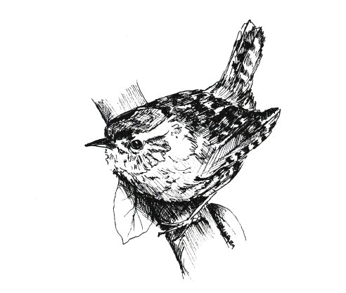

RAZEL DAZEL AND MY OLD CHICKEN
Razel Dazel was a farmworker. He worked at Hillhouse Farm, or the Farmhouse on the hill. This was two miles from our village. He walked to work every morning and back every evening. As Razel grew older the journey took him longer, he paused and looked over his shoulder many times, hoping for some company or something of interest to take the monotony out of the journey
One thick foggy morning he saw a shape following.
“Bit thick,” said Razel to his fellow traveller.
“Mmmm” said the traveller. One hundred yards or so on they came to a gate:
“You coming through?” asked Razel.
“Mmmm” said his companion. Razel opened the gate, stepped aside and a cow walked through much to Razel’s surprise!
His wife, “Ole Chicken”, who was a big woman – twenty stone, was always getting wood for her fire. Anywhere a tree was cut down or bushes of any size, she would put a dozen branches in a bundle or faggot, tie it and carry it off.
Our local Bobby (Policeman) had been alerted by farmers that wood was vanishing out of the fields, hedges and fences, allowing cattle to stray from fields. He caught Chicken with a huge faggot tied with a strong rope – three hundred weight of wood.
“Mrs,” said the Bobby, “if you can carry that, you can have it, and good luck to you. A man couldn’t get that on his back, let alone carry it miles home!”
Chicken looked around for a strong post and thrusting it through the faggot, and rearing it up by the post at one end in the ground, levered it onto her shoulders.
“Good day and thank you,” she said, and off home she went, wood as well. Our Bobby stood there with his mouth open in astonishment!
Chicken was a heavy smoker and she walked the village streets picking up cigarette dog-ends, which she put into a cigarette paper and rolled into cigarettes. (This was before filter-tips).
As she got older, her neighbour Enock would cut and saw the bigger pieces of wood for her.
One evening Ole Chicken sat astride a big piece across a chair. Ole Chicken puffed away at her smoke and yapped away about this and that, quite enjoying the situation, someone to do her work. Enock got fed up with the yap-yap, it got on his nerves. He sawed harder and harder, she yapped on and on. Enock gritted his teeth and sawed faster and all at once the log was through, upending Ole Chicken.
“That shut her up” said he, “but you know what? She had forgotten to put her pants on, Mate, and she was sunnyside up!”
